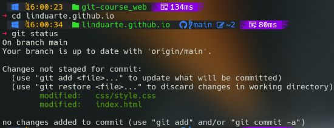

Principais estados dos arquivos no Git
O Git possui três estados nos quais seus arquivos podem ser armazenados.Estes estados correspodem a estágios de um projeto a saber:
"modificado", "staged" e "comitado".
"Modificado" - significa que houve uma alteração em seu arquivo mas o mesmo não foi ainda "comitado".
"Staged" - significa que voce marcou o arquivo modificado para que ele seja encaminhado ao próximo 'commit'.
"Comitado" - significa que os dados pertinentes ao seu arquivo estão seguros em sua base de dados.
Conceitos chave:'Repositories','Commits' e 'Branches'
- 'Repositories': Os repositórios Git são recipientes de projetos, armazenamento de arquivos e sua revisão hitórica
- 'Commits': Cada 'commit' representa um 'instantâneo'em um determinado tempo permitindo aos usuários voltar atras em estatus anteriores
- 'Branches': Eles permitem desenvolvimentos paralelos de tal sorte que os desenvolvedores possam trabalhar em diferentes características ou até mesmo corrigir falhas no software (bugs) independentemente.
Git workflow (fluxo de trabalho)
- Inicializando um repositório:
git init - Adicionando arquivos na área de 'staging':
git add - Realizando um 'commit':
git commit -m "Commit message" - Verificando o estatus:
git status - Vendo o histórico dos commits:
git log
Terminal Git e porque não uma interface gráfica
A interface gráfica de fato provê uma forma intuitiva de interagir com o Git.
Entretanto o terminal oferece várias vantagens que o fazem ser o preferido entre os desenvolvedores.
A linha de comando permite uma grande visibilidade e controle. Os desenvolvedores tem clareza pela representação textual
das mudanças do projeto, os 'branches' e toda a história do desenvolvimento.
Esta transparência é de todo crucial para o entendimento das complexidades do controle de versão permitindo atuações de maneira imediata.
Deve-se salientar ainda que o terminal permite criar 'scripts' que auxiliam os desenvolvedores a automatizar tarefas repetitivas ou customizar
fluxos de trabalho específicos de seus projetos.

E como não falar de GitHub?
O engenheiro de software, Tom Preston-Werner vendo a necessidade de se criar uma forma mais eficiente de compartilhar e gestionar os códigos fonte entre os desenvolvedores deu início ao projeto do GitHub em março de 2008.Através de investidores a idéia cresceu e após um aporte de 100 milhoes de dólares a empresa em dois anos já contava com um milhão de usuários. Crescendo desta forma ela foi adquirida por 7,5 bilhões de dolares pela Microsoft. GitHub é um serviço de hospedagem via web para desenvolvimento de projetos de software que usa o sistema de revisão e controle do Git. Ele oferece todas as funcionalidades de controle distribuido de versão do Git e adiciona sua próprias funcionalidades.